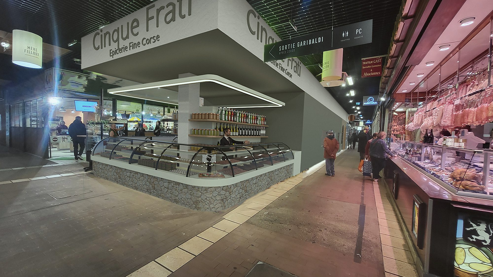
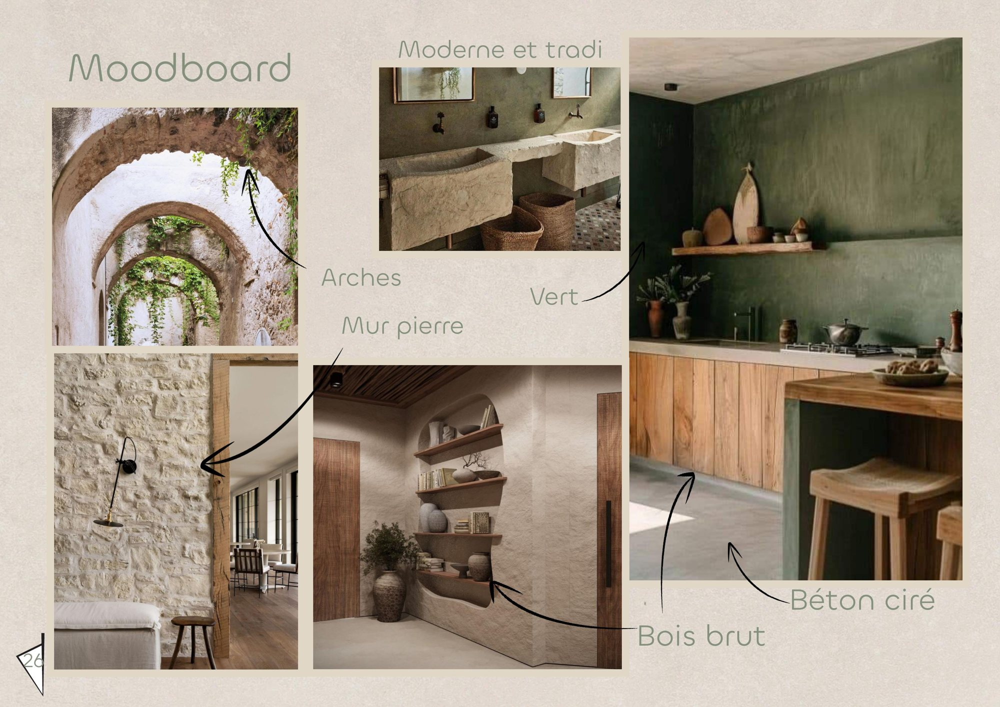
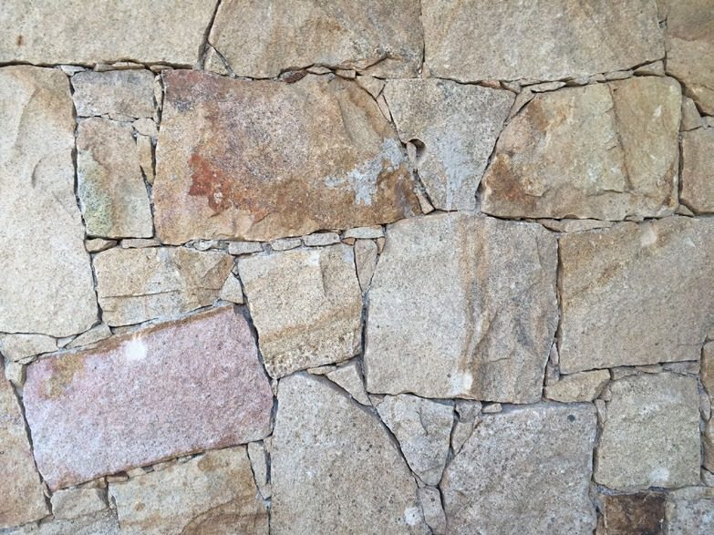
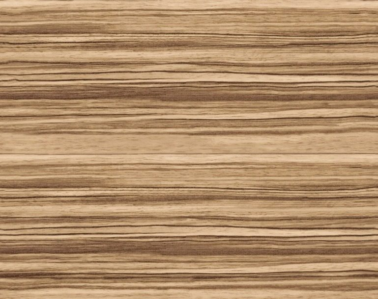
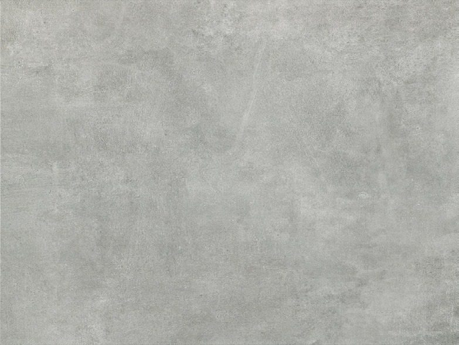
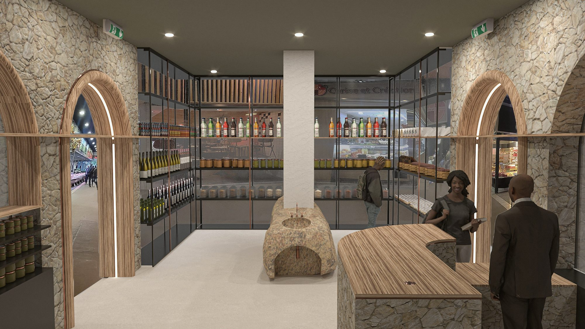
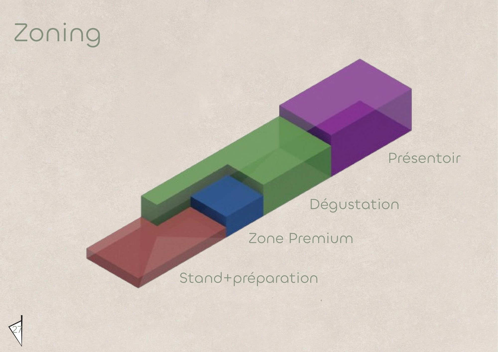
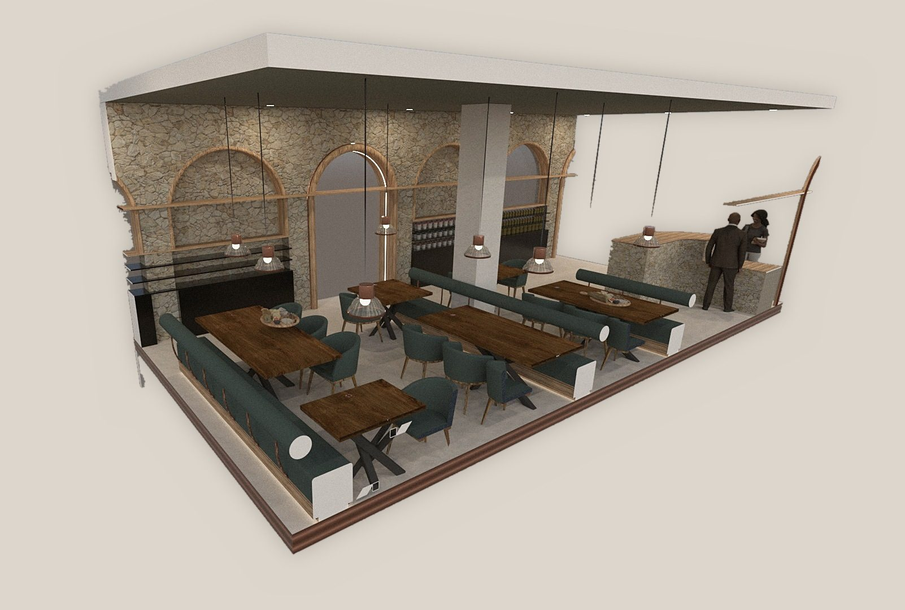
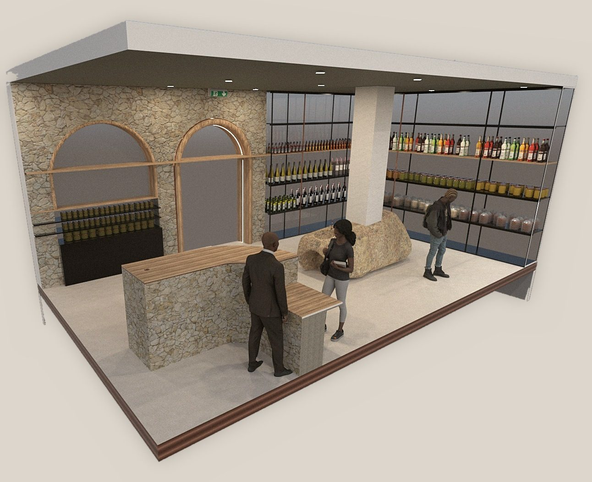

The space · interior architecture
A villageinside the Halles.
How do you fit the spirit of a mountain village into 181 m² of a covered market? Four materials and one curve.
181 m²in the heart of the Halles
4zones: display, counter, lounge, preparation
12guests in the lounge
1curve: the arch
Concept
Fusion.
Corsican tradition meets Lyon modernity. The arches frame, the stone anchors, the wood warms, the polished concrete connects.


Materials
Four materials.

Local stone
The base of the stand and the walls of the arches. It anchors.

Raw chestnut
Shelving, tables, seating. It warms.

Polished concrete
Floor and worktops. It connects.

Glass
Display cases and skylight. It reveals.
The route
Four zones, one movement.
You enter under the arch, discover the display, stop at the counter, settle in the lounge.









Credit
Design by Baptiste Linet.
Detailed design project, April 2025. Delicatessen and tasting space, Halles de Lyon Paul Bocuse, 102 cours Lafayette, Lyon 3e.